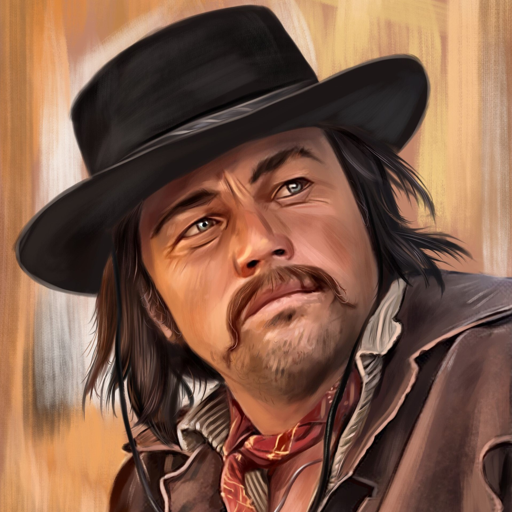
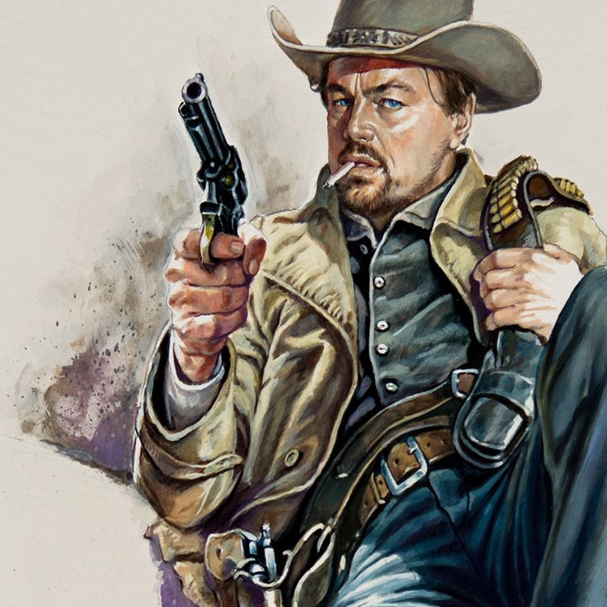
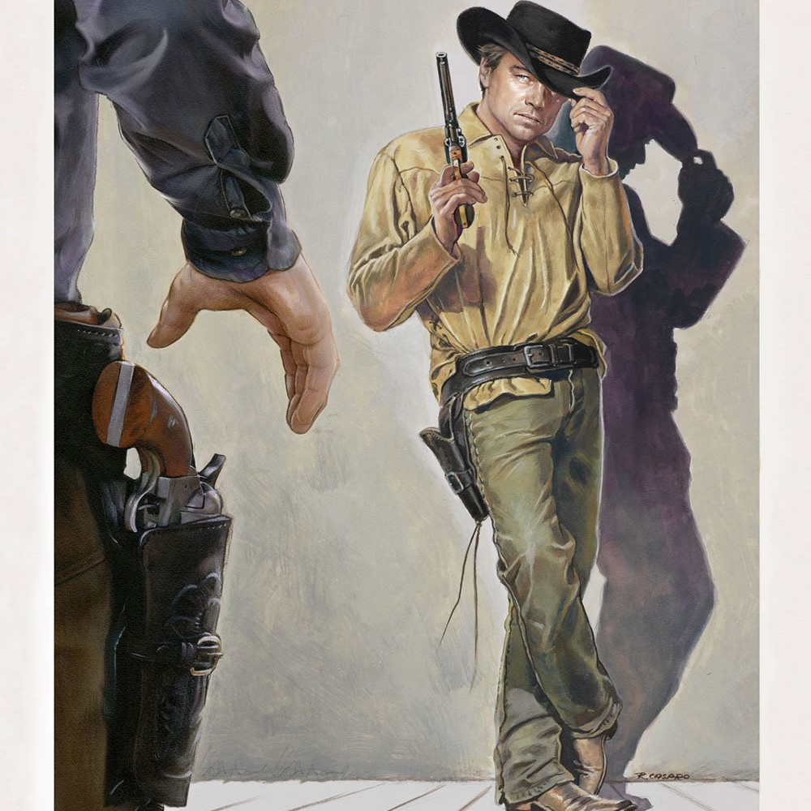

Rick Daltonnak tulajdonítható a főszerep, a karaktert Leonardo DiCaprio játsza. Rick egy felkapott színész, aki legtöbbször rosszfiúkat játszik és szeretne bizonyítani a világnak hogy képes még úgy játszani, mint régen. Sajnos ezt nem csak a kor, de az alkohol problémái is korlátolják. A Bounty Law című fiktív western tévésorozat főszereplője volt. Sikertelenül próbálkozott szerepet kapni mozifilmekben, és a tévés showműsorok vendégszereplései mellett már azt fontolgatja, hogy a spagettiwesterneket gyártó Olaszországba költözik. Tarantino világában Sharon Tate szomszédja.
Ricknek számos szerep jut a film alatt, például fejvadász a Bounty Lawból, vagy pisztolyhős a Ringo Gringoból, az olasz James Bond és sorolhatnánk.